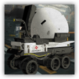

医疗支援机械 Lancet-2
近战 物理；普通 构装
|  |
罗德岛医疗机器人Lancet-2。被工程师可露希尔派遣来执行战地医疗任务。圆形的外观让人觉得很可爱所以成为了某种意义上的吉祥物。虽然她说话有时候很消极，但是大家都很喜欢她。 本质上是经过客制化后的雷神存在者S Typer 62六轮作业平台，在经过可露希尔的改造后，得以满足更多罗德岛内的医疗需求，其器械设备也更注重于消毒和应对源石污染。 |
医疗支援机械丨Lancet-2
中型构装（作战平台），守序中立
AC 12
先攻 +4（14）
HP 22（4d8+4）
速度 30尺
| 调整 | 豁免 | ||
|---|---|---|---|
| 力量 | 8 | -1 | -1 |
| 智力 | 8 | -1 | -1 |
| 调整 | 豁免 | ||
|---|---|---|---|
| 敏捷 | 14 | +2 | +2 |
| 感知 | 12 | +1 | +1 |
| 调整 | 豁免 | ||
|---|---|---|---|
| 体质 | 13 | +1 | +1 |
| 魅力 | 12 | +1 | +1 |
技能 洞悉+3，医药+3
免疫 毒素；魅惑，恐慌，力竭，中毒，震慑，目盲，耳聋
装备 医疗包
感官 黑暗视觉60尺，被动察觉11
语言 通用语
CR 1（XP200；PB+2）
特质 Traits
救援喷雾 Support Spray。医疗支援机械进行先攻检定时，为其30尺内的所有可见盟友恢复5点已损生命值。
模块修复 Module Repairation。支援机械受益于修复术效应时，若其生命值不小于1，则恢复1点生命值。
稳定底盘 Stable Chassis。在对抗造成倒地状态的效应时，支援机械的体型视为大一级的体型，且所作的豁免检定具有优势。
动作 Actions
创伤疗剂 Healing Agents（3次/日）。医疗支援机械选择30尺内的一名可见生物，为目标生物恢复7（2d4+2）的生命值。
战地医师 Battle Medic。医疗支援机械消耗医疗包的一次使用次数来救治一个位于其5尺内的生物。该生物可以投掷并消耗一枚生命骰，该生物恢复掷骰结果+2的生命值。